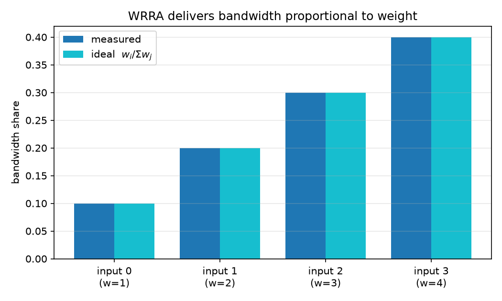
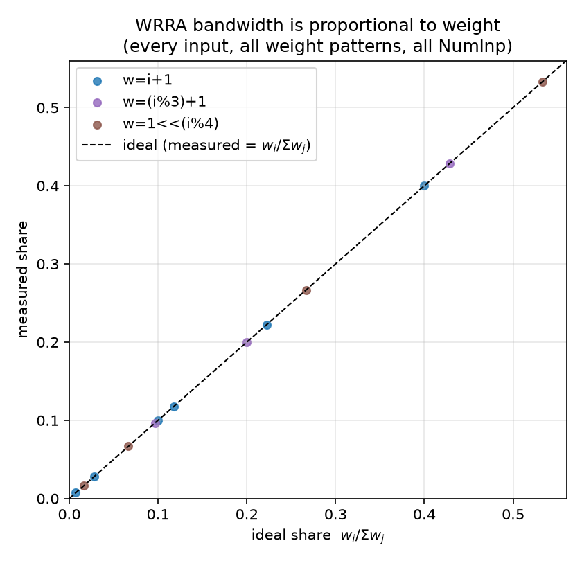
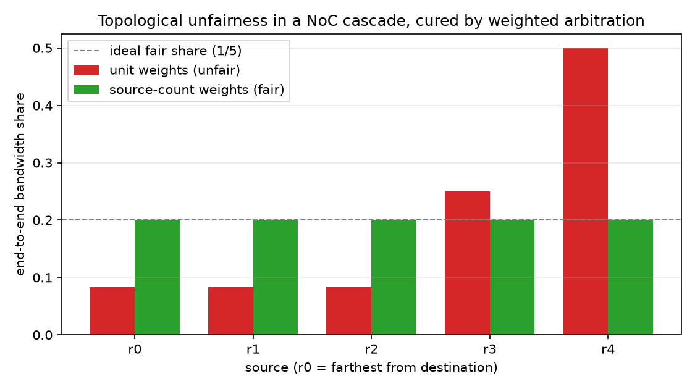
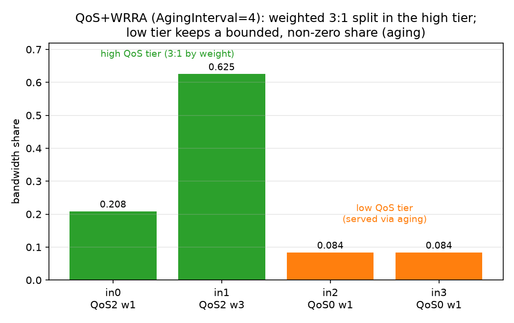
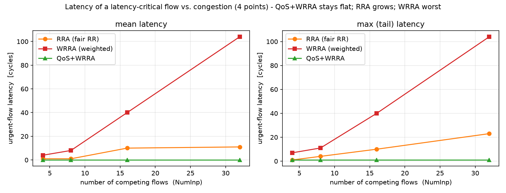
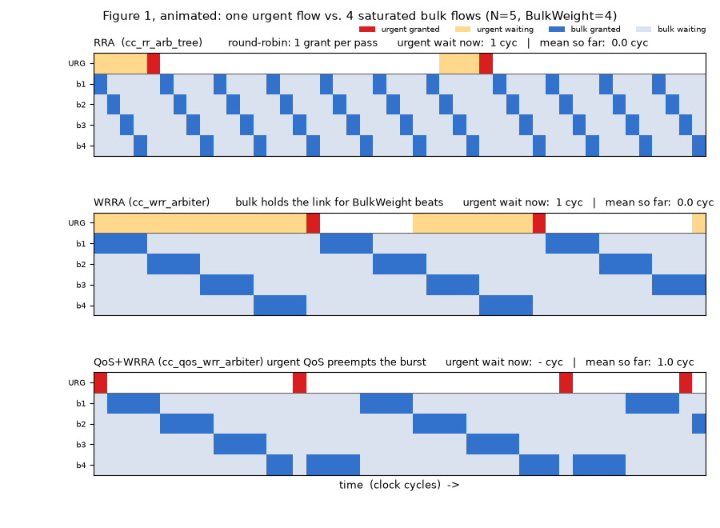
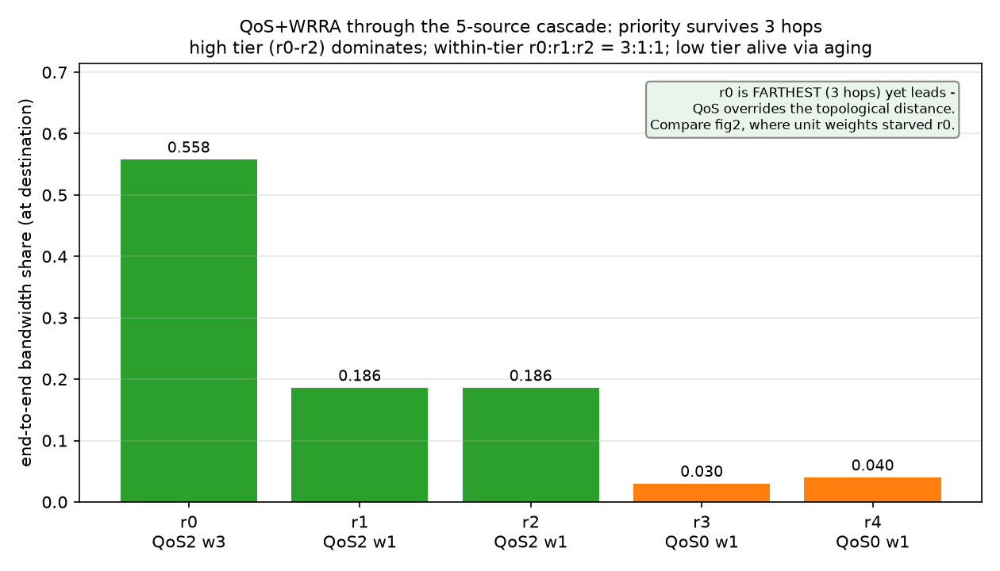
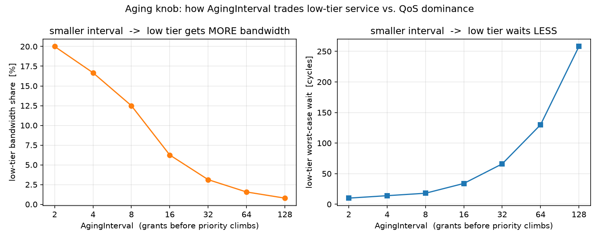
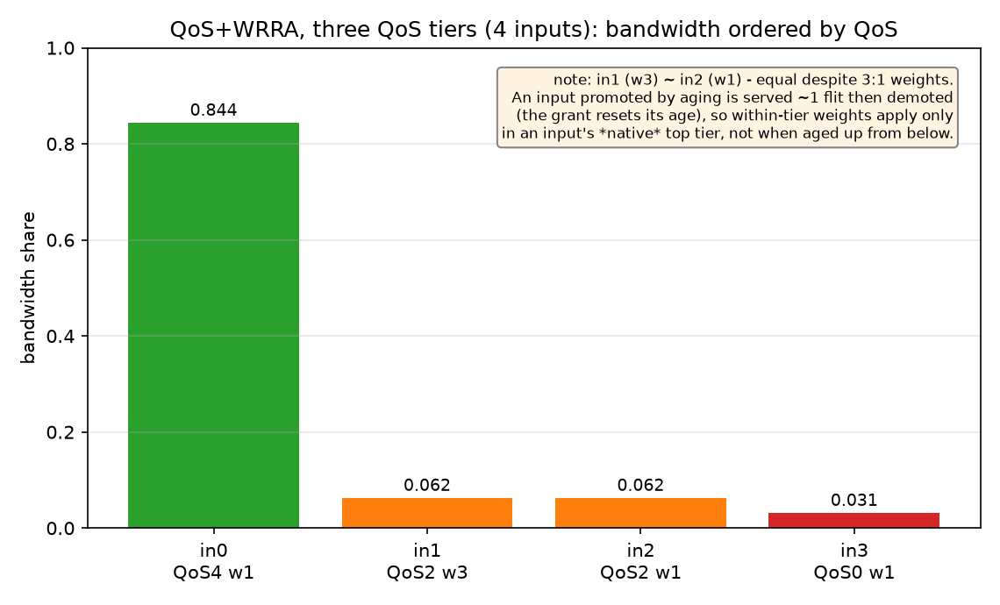
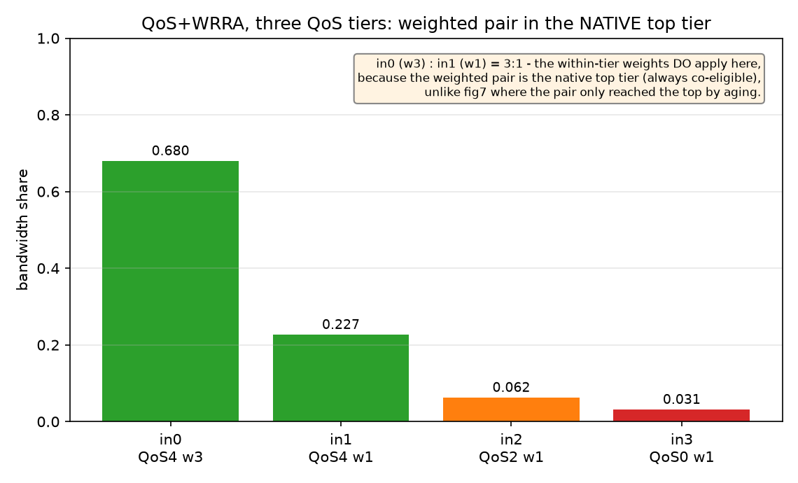

cc_wrr_arbiter) SoC-DAML — Extending FlooNoC with Weighted Round-Robin Arbitration
Student: Vatsal Dixit
A plain round-robin (RR) arbiter is locally fair: when n inputs contend, each
receives 1/n of the output bandwidth. In a NoC, however, traffic towards a common
destination is merged by a chain/tree of arbiters, and local fairness at each hop
does not give global fairness. Working back from the 1.0 bottleneck link of a
linear chain of fair 2-input arbiters (Dally & Towles, Principles and Practices of
Interconnection Networks):
| Arbiter | splits | local source | through (upstream) |
|---|---|---|---|
| A2 | 1.0 | r3 = 0.50 | 0.50 |
| A1 | 0.50 | r2 = 0.25 | 0.25 |
| A0 | 0.25 | r1 = 0.125 | r0 = 0.125 |
The source farthest from the destination (r0) is starved at 1/8 while the nearest
(r3) takes 1/2. This is topological unfairness: it is a property of where a
requester sits, not of the arbiter being unfair.
Fix. Replace each RR arbiter with a weighted RR arbiter and weight every input by
the number of original requesters whose traffic it aggregates. Because each "through"
input is the funnel for all upstream sources, its weight must reflect that. Weights are
additive up the tree (an arbiter input's weight = sum of the leaf weights it carries),
so every leaf source ends up with an equal — or, more generally, an ωᵢ-proportional —
share at the bottleneck, regardless of hop depth or router radix.
cc_wrr_arbiter is a generic, NumIn-input, valid/ready arbiter that merges its inputs
onto one output while distributing bandwidth proportionally to a per-input weight:
bandwidth_i = w_i / Σ_j w_j (j over the currently-contending inputs)
| Port | Dir | Description |
|---|---|---|
req_i |
in | per-input valid |
gnt_o |
out | per-input ready (one-hot) |
data_i |
in | per-input payload (data_t, generic) |
weights_i |
in | per-input weight (WtWidth bits each) |
req_o |
out | output valid |
gnt_i |
in | output ready |
data_o |
out | winning input's payload |
idx_o |
out | winning input index |
flush_i |
in | synchronous clear of arbiter state |
The weight is realised as a burst. When an input wins, it is granted up to wᵢ
consecutive flits (one flit = one accepted valid/ready transfer) before the round-robin
pointer advances to the next contender. Over one full rotation that visits every contender
once, input i emits wᵢ of Σⱼ wⱼ flits — giving the bandwidth split above.
(Note: a burst here is a bandwidth allowance — wᵢ consecutive flits from one input — and
is deliberately not a NoC packet. The flits in a burst are independent and may span
several logical packets; "packet" is reserved for the atomic wormhole-routed unit.)
The cell is a thin wrapper around the existing cc_rr_arb_tree:
cc_rr_arb_tree (with FairArb + LockIn) is used only as a winnergnt_i is pulsedcnt) tracks the flits remaining in the current burst.These are also documented inline in src/cc_wrr_arbiter.sv.
Burst weighting (deficit RR), not interleaving. A burst arbiter is small and
simple. The cost is burstiness: a low-weight input waits through a full high-weight
burst, so its latency/jitter is worse than a WFQ-style interleaved scheme would give.
The steady-state bandwidth ratio is identical either way, so for bandwidth shaping
under contention the burst scheme is the right trade.
Reuse cc_rr_arb_tree for selection. Rather than re-implement fair rotation, the
cell layers the burst counter on the proven tree. This keeps the new logic minimal
and inherits the tree's fairness and timing properties.
Contender snapshot (req_lock_q). The inner arbiter's LockIn carries a formal
assumption that unserved requests are not deasserted while it is locked. The wrapper
therefore feeds the inner arbiter a frozen snapshot of the contender set, captured
at the start of each burst and held until the burst completes. This keeps the inner
arbiter within its usage contract even if a non-winning input bubbles mid-burst (which
is harmless to the served traffic, but would otherwise trip the inner assertion). The
snapshot is only refreshed on burst-boundary cycles, where the inner lock is
disengaged and refreshing is legal.
cnt_eff makes the weight live on the first flit. A plain counter register lags by
one cycle, so on the first flit of a burst it would still hold the previous value. The
cell uses cnt_eff = load_round ? sel_weight : cnt_q, which presents the freshly
selected weight on the very first flit. Without this, the first winner after every idle
period would be truncated to a single grant (this was a bug in the original
floo_wrr_arbiter prototype this cell is derived from).
Non-work-conserving within a burst (intentional). A burst only advances on accepted
flits. If the locked winner bubbles, the output waits for it rather than serving another
ready input. This keeps the bandwidth ratio exact in the saturated regime the WRRA
targets (the regime in which the topological-unfairness analysis is defined). Under
non-saturation the ratio degrades gracefully towards the offered load.
Weight 0 means "no service". A weight-0 input is excluded from arbitration entirely —
skipped and never granted, even while requesting (it gets zero bandwidth, as the weight says).
This is implemented by masking it out of the contention set (eff_req = req_i & (weight != 0)),
which also keeps the burst counter from ever loading 0. If every requester has weight 0 the
output simply stays idle.
Two testbenches verify the cell; both pass with Errors: 0 in QuestaSim. Run via:
make vsim-elab
cd build/vsim
bash ../../test/simulate-wrra.sh
cc_wrr_arbiter_tb A single flat 4-input arbiter, all inputs saturated, weights wᵢ = i+1 (sum 10). The
measured bandwidth share matches the wᵢ/Σwⱼ ideal exactly:
| Input | Weight | Measured | Ideal |
|---|---|---|---|
| 0 | 1 | 0.100 | 0.100 |
| 1 | 2 | 0.200 | 0.200 |
| 2 | 3 | 0.300 | 0.300 |
| 3 | 4 | 0.400 | 0.400 |
This confirms that a higher weight ωᵢ directly buys proportionally more bandwidth —
the property the assignment asks to demonstrate. A data-integrity check (data_o === data_i[idx_o]) also passes, confirming the output always carries the winning input's data.

Sweeping several weight patterns across several input counts, every input's measured share
lands on the wᵢ/Σwⱼ line:

cc_wrr_arbiter_cascade_tb Five saturated sources r0..r4 are merged towards one destination through a
mixed-radix cascade — a 3-input first hop plus two 2-input hops — to show the cell
works at arbitrary radix:
r0 r1 r2 ─►[A0 (3-in)]─┐
├─►[A1 (2-in)]─┐
r3 ──┘ ├─►[A2 (2-in)]─► Dest
r4 ──┘
Each flit carries its source id as payload, so counting payloads at the destination gives
each source's end-to-end share. Two configurations are run:
Weighted = 0 (unit weights → plain RR at each hop): topological unfairness reproduced
| Source | Measured | Ideal (1/12, 1/4, 1/2) |
|---|---|---|
| r0 | 0.0833 | 0.0833 |
| r1 | 0.0833 | 0.0833 |
| r2 | 0.0833 | 0.0833 |
| r3 | 0.2500 | 0.2500 |
| r4 | 0.5000 | 0.5000 |
Weighted = 1 (through-weights = aggregated source count, A1=3, A2=4): fairness restored
| Source | Measured | Ideal (1/5) |
|---|---|---|
| r0 | 0.2000 | 0.2000 |
| r1 | 0.2000 | 0.2000 |
| r2 | 0.2000 | 0.2000 |
| r3 | 0.2000 | 0.2000 |
| r4 | 0.2000 | 0.2000 |
The before/after pair demonstrates the full result: the WRRA, with weights assigned by the
additive-up-the-tree rule, cancels the topological bias and equalises end-to-end
bandwidth across sources at any radius and any router radix. The same weights can instead
be set unequal to deliberately favour selected requesters in proportion to their ωᵢ.

cc_qos_wrr_arbiter) The WRRA controls bandwidth (how much of the link each input gets). It cannot control
latency — which request should be served first. These are two orthogonal axes:
| knob | controls | answers |
|---|---|---|
weights_i (WRRA) |
bandwidth (rate) | "how much of the link does this input get?" |
qos_i (QoS) |
priority (latency) | "when several wait, who goes first?" |
cc_qos_wrr_arbiter combines both. A per-input qos_i (like AXI AxQOS) selects the
served tier; within that tier, bandwidth is split by weights_i via cc_wrr_arbiter:
effective_qos[i] = qos_i[i] + age[i]
max_eff = max over contenders of effective_qos[i]
eligible[i] = req_i[i] && (effective_qos[i] == max_eff) // the winning QoS tier
winner = weighted round robin (by weights_i) among `eligible`
age[i] climbs by 1 everyAgingInterval grants (forward-progress cycles, not clock cycles — so a stall does notAll testbenches pass with Errors: 0.
cc_qos_wrr_arbiter_tb Four saturated inputs: high tier {input 0 (QoS 2, w 1), input 1 (QoS 2, w 3)}, low tier
{input 2, 3 (QoS 0, w 1)}, AgingInterval = 64.
| Input | QoS | weight | share | maxWait |
|---|---|---|---|---|
| 0 | 2 | 1 | 0.246 | 6 cyc |
| 1 | 2 | 3 | 0.738 | 4 cyc |
| 2 | 0 | 1 | 0.0078 | 130 cyc |
| 3 | 0 | 1 | 0.0078 | 130 cyc |
cnt[1]/cnt[0] = 3.0000 (the 3:1 weights).maxWait = 130 ≈ qos_gap × AgingInterval) — aging works.The figure below shows the same arbiter at AgingInterval = 4 (so the low tier is clearly
visible — at the nominal 64 it is only ~0.8 %): the high tier splits 3:1 by weight, and the
low tier keeps a bounded, non-zero share via aging.

cc_arbiter_compare_tb (headline result) Identical traffic through all three arbiters: N−1 saturated bulk flows (QoS 0, weight 4)
plus one sporadic urgent flow (QoS 8, weight 1), with jittered arrivals. Swept over the
number of competing flows. Urgent-flow request→grant latency (cycles):
| NumInp | RRA mean / max | WRRA mean / max | QoS+WRRA mean / max |
|---|---|---|---|
| 4 | 2.0 / 3 | 9.7 / 15 | 0.76 / 1 |
| 8 | 4.0 / 7 | 15.6 / 31 | 0.76 / 1 |
| 16 | 7.1 / 15 | 40.2 / 50 | 0.72 / 1 |
| 32 | 10.9 / 23 | 104.2 / 114 | 0.48 / 1 |
Reading the result:
N peers, so latency scales with the number of competitors.≈ (N−1)·weight), reaching 104 cycles at N=32. This is the key insight:The full swept curve (finer N, with jittered urgent arrivals so the periodic-stimulus
resonance of §6.4 does not jag the lines) — note the linear blow-up of WRRA to ~168 cycles
while QoS+WRRA hugs zero. N = 5 is marked as the anchor: it is the same source count as
the cascade experiments (§4.2, §6.3), so the swept result cross-references them.

The animation below makes the mechanism behind this curve visible: one urgent flow (top row,
URG) competes with 7 saturated bulk flows (b1..b7), arbitrated three ways in lock-step.
Under RRA the bulk grants march one beat at a time (a diagonal) and the urgent flow waits
about half a rotation; under WRRA each bulk flow holds the link for BulkWeight = 4 beats
(fat bursts), so the urgent flow's wait (amber) stretches much longer; under QoS+WRRA the
urgent flow's high QoS preempts the in-flight burst and is served almost immediately (red).
It is a faithful behavioural model of the three arbiters at N = 8 (we have no cycle-accurate
trace here), with mean urgent waits of ≈ 4.7 / 21.2 / 1.0 cycles respectively — the same
ordering as the swept curve above.

cc_qos_wrr_cascade_tb The mixed-radix cascade from §4.2 rebuilt from cc_qos_wrr_arbiter, with per-flit QoS
(each flit carries its QoS in the header, read at every hop). The farthest source r0
injects sporadic flits; we measure their end-to-end latency:
| Config | r0 end-to-end latency (mean / max) |
|---|---|
UrgentQos = 8 (prioritised) |
0.27 / 1 cyc |
UrgentQos = 0 (uniform baseline) |
4.0 / 4 cyc |
QoS shortcuts the latency-critical flow through every hop — even though r0 is the
topologically disadvantaged source — while weights keep bulk bandwidth fair.
cc_qos_wrr_cascade_share_tb §6.3 measures latency through the cascade; this is the bandwidth counterpart, run on the
same 5-source structure so the QoS results are directly comparable to the topological study
of §4.2 (and to the flat two-tier test of §6.1, which isolates the same mechanism on a single
arbiter). All five sources are now saturated, with a 3-high / 2-low QoS layout mapped
onto the cascade and a weighted pair in the high tier:
| Source | hops to dest | QoS | weight | tier |
|---|---|---|---|---|
r0 |
3 (via A0) | 2 | 3 | high (weighted) |
r1 |
3 (via A0) | 2 | 1 | high |
r2 |
3 (via A0) | 2 | 1 | high |
r3 |
2 (via A1) | 0 | 1 | low |
r4 |
1 (via A2) | 0 | 1 | low |
Each source's share is counted at the destination (by the flit's source id), after 1–3 hops
of re-arbitration. Three things fall out:
r0..r2) dominates the destinationr0 to 1/12. QoS overrides the topological distance.r0 : r1 = 3 : 1 weighting is applied3:1 split within the highr3, r4 (QoS 0) never starve.
One honest nuance: with QoS tiers active, the topological-fairness through-weights
(A1.through = 3, A2.through = 4) become secondary — QoS, not the port weights, now decides
the bulk of the bandwidth split. They still shape how the small low-tier (aging) share is
divided between r3 and r4, but the headline split is set by QoS. (The numbers in fig8 are
produced by the cc_qos_wrr_cascade_share_tb run on the sim machine; rerun simulate-wrra.sh
and regenerate to populate them.)
In §6.2's throughput (not latency) the bulk flows — though identical — do not get equal
shares at some N (e.g. N=16: a few get ~0.17, the rest ~0.009; N=4/32 are ~uniform).
Cause: the sporadic urgent flow preempts on a fixed period and, each time it is served, the
round-robin pointer is rewound to roughly the same place. Only the ~gap/weight bulk inputs
the pointer reaches before the next preemption get served; aging only sprinkles a few grants
on the rest. Whether this freezes on the same victims (unfair) or drifts across them
(uniform) depends on whether the preemption period aliases with the rotation length — the
same effect as a strobe light appearing to freeze or slowly rotate a spinning wheel. It is
therefore an artifact of perfectly periodic stimulus; jittering the inter-arrival gap (as
real traffic does) breaks the resonance and evens the shares out. It does not affect the
latency result, the within-tier weighting (§6.1), or correctness (no starvation).
This is confirmed empirically: the comparison testbench has a GapJitter knob that randomises
the urgent think-time. With it enabled the latency curves (fig1) smooth out and the bulk
shares become uniform — the same fix in both places, because both symptoms share the one
cause (periodic preemption resonating with the rotation).
AgingInterval is the single dial that trades low-tier protection against QoS
dominance. Sweeping it on the two-tier test gives a clean, designer-facing curve:

Each time AgingInterval doubles, the low tier's bandwidth share roughly halves and
its worst-case wait roughly doubles (e.g. share 0.20 → 0.008, max-wait 10 → 258 cycles
across intervals 2 → 128). The figure splits this into two simple panels: low-tier
bandwidth share falls as the interval grows (left), while its worst-case wait rises
(right). So the value is read off whichever panel encodes the requirement — a bandwidth floor
(left) or a latency bound (right) — rather than being a fixed optimum. A practical
default is 16–32: the high tier keeps ~94–97 % while the low tier holds a few percent with a
bounded few-tens-of-cycles wait.
Extending to three QoS levels across 4 inputs surfaces a subtle but important rule. Two
scenarios were run (cc_qos_wrr_3tier_tb):
Weighted pair in the mid tier (QoS {4,2,2,0}, weights {1,3,1,1}): the QoS-2 pair
in1 (w3) and in2 (w1) get the same share — the 3:1 weighting is lost.

Weighted pair in the native top tier (QoS {4,4,2,0}, weights {3,1,1,1}): now the
QoS-4 pair in0 (w3) and in1 (w1) split exactly 3:1 (0.680 : 0.227).

The reason is the aging mechanism: an input promoted into a higher tier by aging is served
one flit and then demoted (the grant resets its age, dropping its effective QoS), so its
burst — and hence its weight — never takes effect. The conclusion: within-tier weights apply
only in an input's native top tier (where it is always co-eligible), not when it is aged up
from below. This is the concrete, measured form of the aging-vs-weighting tension — two
mechanisms (round-robin weighting and aging) both deciding "who is served next" and only
composing cleanly within a single, stable tier.
The cascade/comparison testbenches exercised regimes the unit tests did not, surfacing three
bugs — each fixed and re-verified:
floo_wrr_arbiter prototype). The burstcnt_eff making the weight live on the first flit (§3.4).eligible mid-burst, the inner arbiter stayed locked on a now-ineligiblewinner_gone); under saturation it never triggers, so weightedgnt_o was asserted from gnt_i alone, so agnt_o[winner] = req_o & gnt_i).| File | Purpose |
|---|---|
src/cc_wrr_arbiter.sv |
weighted round-robin arbiter (bandwidth) |
src/cc_qos_wrr_arbiter.sv |
QoS priority + aging + weighted RR |
test/cc_wrr_arbiter_tb.sv |
flat wᵢ/Σwⱼ throughput + weight-0 unit test |
test/cc_wrr_arbiter_cascade_tb.sv |
mixed-radix topological-unfairness cascade |
test/cc_qos_wrr_arbiter_tb.sv |
two-tier QoS+WRR (weighting + anti-starvation + aging sweep) |
test/cc_qos_wrr_3tier_tb.sv |
three-QoS-tier scenarios (fig7 / fig7b) |
test/cc_qos_wrr_cascade_tb.sv |
per-flit-QoS cascade end-to-end latency |
test/cc_qos_wrr_cascade_share_tb.sv |
QoS bandwidth share through the 5-source cascade |
test/cc_arbiter_compare_tb.sv |
RRA vs WRRA vs QoS+WRRA latency/throughput sweep |
test/simulate-wrra.sh |
runs the simulations + sweeps, writes results.csv |
test/waves/*.wave.do |
GUI waveform setups |
doc/plots/plot_arbiters.py |
turns results.csv into the report figures |
doc/plots/fig*.png |
the evaluation figures (fig1–7b) |